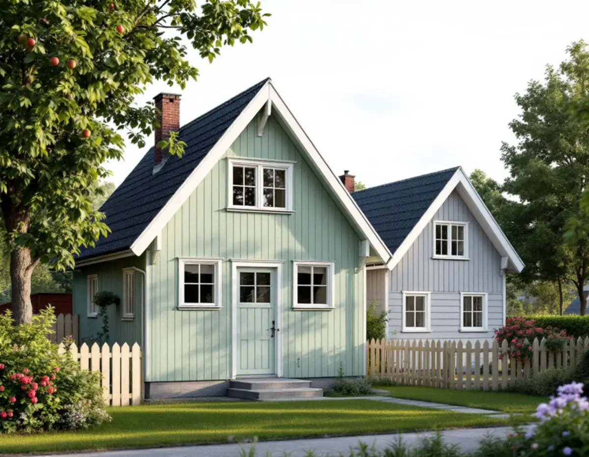
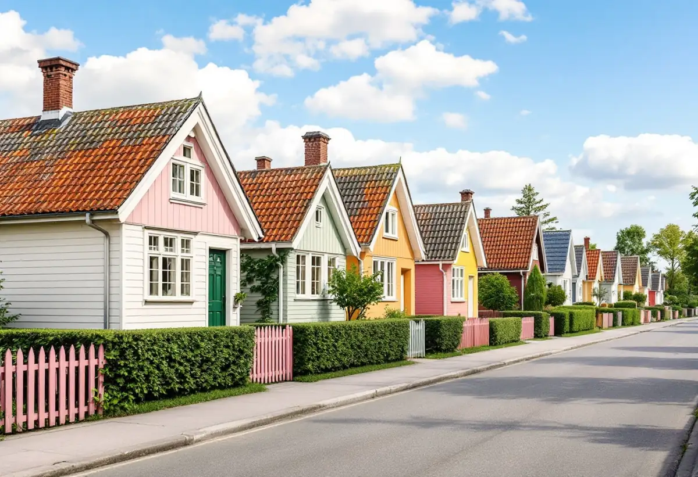
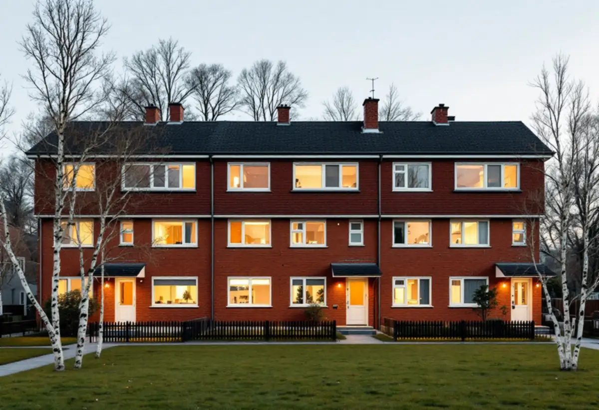

Mätning
Byggnadsarean på stugan eller radhuset mäts så att det nya huset blir mindre.
I Farsta står många småhus på tomter i Tallkrogen, Sköndal och Svedmyra där huvudbyggnaden själv är ganska liten. Det påverkar hur stort ett attefallshus får bli. Geal Entreprenad AB räknar på villans yta, gränserna och miljön innan vi föreslår ett hus och bygger det sedan nyckelfärdigt.

Stadsmuseets skrift om Tallkrogen beskriver hur utbyggnaden började 1933 och hur området blev det största småstugeområdet i Söderort. Närmare 1 000 småstugor växte upp på flack åkermark under ungefär ett decennium. Husen var standardiserade, men skriften räknar mer än tio olika hustyper, och den som byggde kunde ersätta kontantinsatsen med eget arbete.
Lagen säger att ett lovfritt komplementbostadshus ska ha en byggnadsarea som är mindre än det hus det kompletterar. På en tomt med en liten småstuga blir det ofta den regeln – inte 30 kvadratmeter – som sätter gränsen. Vi mäter därför byggnadsarean på stugan och eventuella tillbyggnader innan vi ritar. Ibland är det bättre att bygga till stugan först och komplementbostadshuset sedan.

Stadens vägledning Varsam utveckling av småhus- och villaområden markerar Tallkrogen som kulturhistoriskt värdefull miljö med ett äldre miljöprogram. Delar av Svedmyra och Sköndal står också som kulturhistoriskt värdefulla. Om din tomt ligger inom en grön eller blå ring i Stadsmuseets klassificeringskarta, eller om huset är markerat med blått eller grönt, krävs bygglov även för ett hus som annars hade varit lovfritt.
I Tallkrogen är gatumönstret speciellt – gatorna lades ut som löparbanor runt en idrottsarena och har namn som Maratonvägen och Olympiavägen. Det gör gaturummen enhetliga, och ett nytt gårdshus syns från gatan om det står fel. Vi placerar det hellre bakom stugan och håller det lågt, med samma takvinkel och färgskala som stugorna.
Farsta byggdes som den första ABC-staden i Söderort och invigdes 1960. Enligt Stadsmuseet lades flera stora radhusområden i stadsdelens utkanter. På sådana tomter är friytan mot grannarna liten, och avståndet 4,5 meter till gränsen går sällan att klara. Då behövs skriftliga medgivanden från alla berörda grannar med situationsplan, fastighetsbeteckning och underskrifter, eller en bygglovsansökan.
Områdesfakta för 2025 visar att det finns 3 806 småhus med äganderätt i Farsta stadsdelsområde, varav 941 i Tallkrogen och 1 194 i Sköndal. Hör ditt radhus till en samfällighet räknas även gränsen mot samfälld mark, och då bör samfällighetens styrelse vara med tidigt. Det går också att söka frivilligt bygglov om du vill ha ett beslut på placeringen.
Ett gårdshus med pentry, dusch och toalett kräver anmälan och startbesked innan vatten, avlopp och ventilation installeras. Till Stockholm Vatten och Avfall skickas en servisanmälan med en ritning över ledningarna. Den nya vattenledningen kopplas efter mätaren i huvudbyggnaden, och spillvattnet ansluts till den befintliga spillvattenledningen inom tomten.
Dagvatten från gårdshusets tak ska inte ledas till spillvattnet. På en flack tomt som i Tallkrogen behöver vi därför planera var vattnet från taket ska ta vägen redan när huset placeras, så att det inte blir stående mot grunden eller rinner över till grannen. Måtten och reglerna i sin helhet beskrivs i reglerna för attefallshus.

Byggnadsarean på stugan eller radhuset mäts så att det nya huset blir mindre.
Kulturmiljöer i Tallkrogen, Svedmyra och Sköndal kontrolleras.
Medgivanden tas fram med situationsplan när huset hamnar närmare än 4,5 meter.
Installationerna anmäls och servisanmälan skickas innan bygget.
Grund, stomme, tak och installationer fram till nyckelfärdigt.
Huset används när slutbeskedet har kommit.
Skatteverket skriver att det inte går att få rotavdrag för att bygga en helt ny bostad, och inte heller för ett nytt hus, en friggebod, ett garage eller en liknande fristående byggnad. Ett komplementbostadshus står fritt på tomten, så kostnadsförslaget för huset räknas utan avdrag.
Husets storlek i förhållande till stugan, om bygglov behövs, kök och badrum, grund och markförhållanden, avståndet till befintliga ledningar och hur material kan köras in på en smal tomt. Efter ett gratis platsbesök får du ett skriftligt kostnadsförslag.
Komplementbostadshus på tomten.
Attefallshus →Takbyte, takbesiktning och plåtarbeten.
Takläggare i Farsta →Tallkrogens småstugor och villorna vid Magelungen.
Takrenovering i Farsta →ABC-staden, radhus och asbest i våtrummet.
Badrumsrenovering i Farsta →En ny bostad i villan.
Byggföretag i Farsta →Tegel, puts, skivor och trädetaljer.
Fasadmålning i Farsta →Radhus, grupphus och fasadskivor.
Fasadrenovering i Farsta →Småstugor och radhus.
Fönsterbyte i Farsta →Småstugorna i Svedmyra och Sköndal.
Fönsterrenovering i Farsta →Linoleum, plastgolv och klinker i småstugan.
Golvläggare i Farsta →Slipa trägolvet och gå igenom resultatet.
Golvslipning i Farsta →ABC-staden, radhus och villor.
Köksrenovering i Farsta →Småstugor, ädelputs och radhus i Söderort.
Målare i Farsta →Skorstensbeslag och plåttak i Farsta.
Plåtslagare i Farsta →Förråd, gäststuga och skärmtak vid småstugan.
Snickare i Farsta →Radhusen, längan och föreningen.
Takbyte i Farsta →Tapet i 1960-talets lägenheter.
Tapetsering i Farsta →Småstugorna och typritningarna.
Totalrenovering i Farsta →